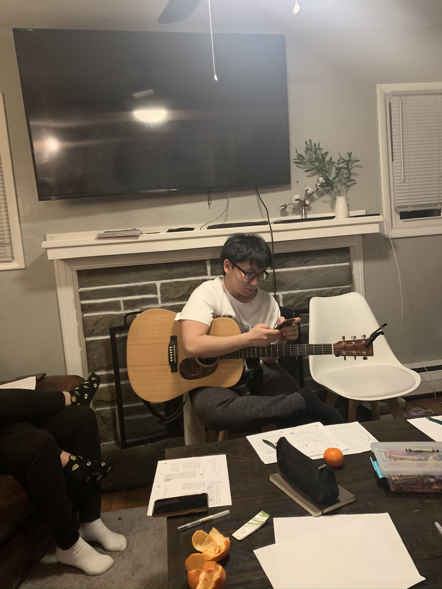

About Me

Hi! I'm Justin Kang and I'm a sophomore undergraduate computer science student at Cornell University in Ithaca, NY. I was born in New York and raised in New Jersey, where I currently live
Hobbies

To balance out the coursework and extracurriculars that I might have, I find myself indulging in things I like to do, such as:
- Guitar: whether it be jamming out with some friends or learning a new song, guitar is one of my escapes from life. I've been playing since 11th grade, so there's still a lot to learn!
- Frisbee: although Cornell is a bit grayer than I would like, there are some rare days when the sun shines and the weather is the perfect condition to throw a frisbee disk with my friends!
- Volleyball: similar to frisbee, there aren't a lot of opportunities to play, but if the weather is nice enough, or if there are any indoor gyms open, volleyball is the first thing my friends and I rush to.
- Cooking: I'm no Michelin star chef, but with the likes of J. Kenji Lopez-Alt, Andrew Rea, and Ethan Chlebowski I can learn to cook for myself.